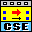
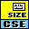
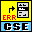
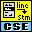
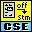
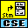

Owning Palette: CSE Script Processor
Advanced CSE VIs.
| Palette Object | Description | |
|---|---|---|
| CSE - Diagnose Script.vi | Returns the names of variables and functions referenced in a parsed script. | |
| CSE - Diagnose Statement.vi | Returns the names of variables and functions referenced in the specified statement of a parsed script. | |
 |
CSE - Execute Script (Basic).vi | Is the basic CSE script executor. You can use it to run a parsed script, or you can create your own script engine based on it. |
 |
CSE - Get number of statements.vi | Returns the number of statements in a parsed script. If requested (TRUE by default), it also returns the script source. |
 |
CSE - Link Error to Source Script.vi | Returns information on the statement of a parsed script where either a parsing error or a runtime error occurred. This information links the invalid statement in the parsed script to the script source. It also provides additional information reflecting the statement's attributes used for execution, debugging, and messaging. |
 |
CSE - Link Source Script Line to Statements.vi | Returns the indexes of statements in a parsed script that start on the specified line of the source script. If no statement starts on the specified line, the VI returns an empty array of statement indexes. The line numbers start at 1. |
 |
CSE - Link Source Script Offset to Statement.vi | Returns the index of the statement in a parsed script that closest matches the specified offset in the source script. If no suitable statement is found, the VI returns -1. |
 |
CSE - Link Statement to Source Script.vi | Returns information linking the specified statement in a parsed script to the script source. It also provides additional information reflecting the statement's attributes used for execution, debugging, and messaging. |